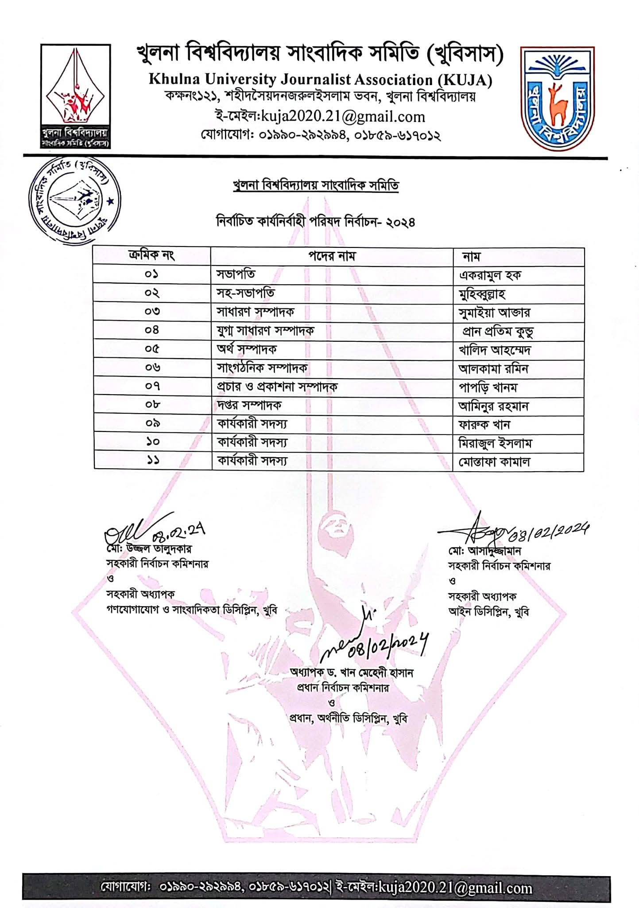
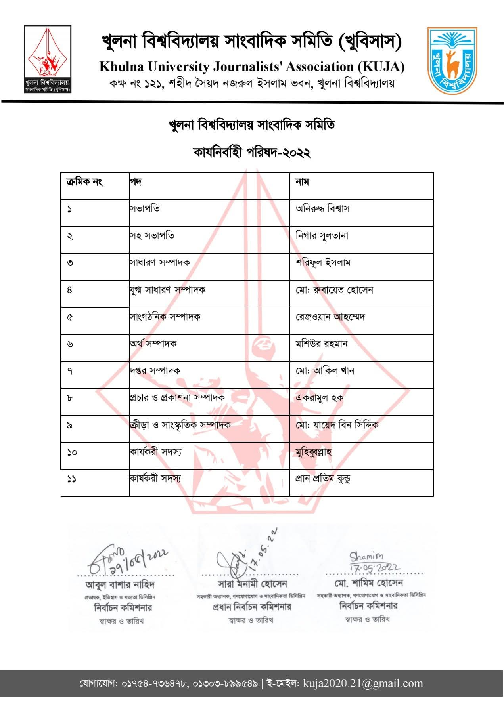
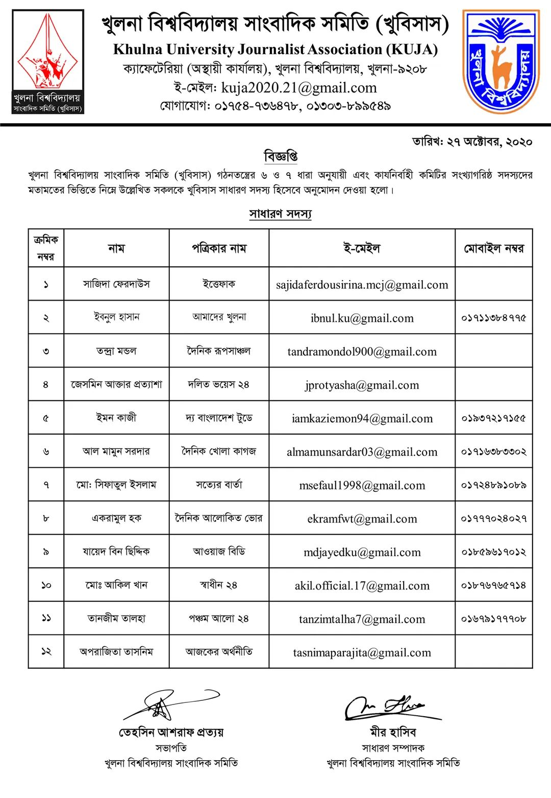

My Role & Contributions
President (8 Feb 2024 – 11 May 2025)
- Planned and organized high-impact journalism training programs with national media experts.
- Led public relations, partnerships, and press coordination with university administration and newspapers.
- Managed recruitment process, including interviewing and selecting 20+ applicants.
- Oversaw annual magazine publication, including proofreading, sponsorship management, and distribution.
- Led collaborative brainstorming sessions with journalists from diverse academic disciplines.
- Presided over multimedia journalism training organized by Press Institute Bangladesh (PIB).
Organizing Secretary (22 Jan 2023 – 8 Feb 2024)
- Led member selection and disciplinary committees.
- Reviewed and evaluated applications for new member recruitment.
- Managed event registrations, communication, and participant engagement.
Secretary of Publicity & Publication (17 May 2022 – 22 Jan 2023)
- Produced press releases, publicity materials, and social media campaigns.
- Enhanced organizational visibility through strategic communication.
Member (27 Oct 2020 – 15 May 2025)
- Actively participated in organizational activities, journalism events, and reporting initiatives.
- Developed practical experience in campus journalism and media coordination.
Gallery



